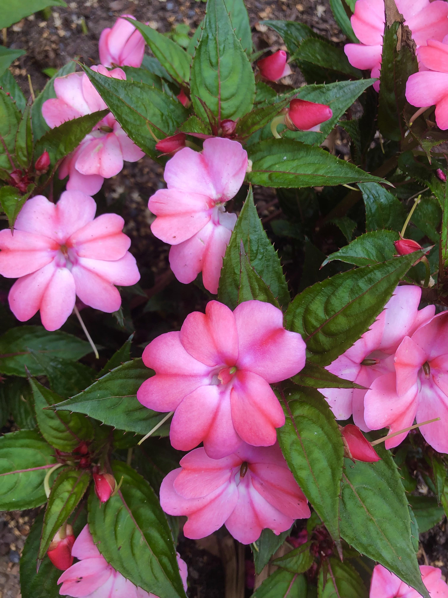
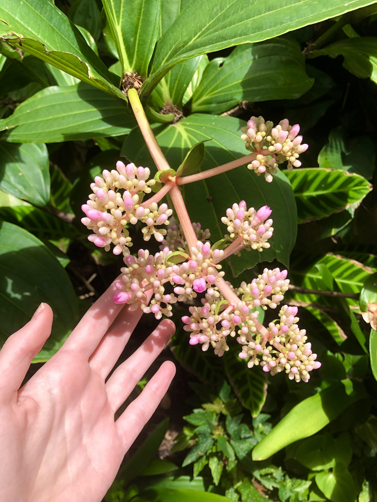
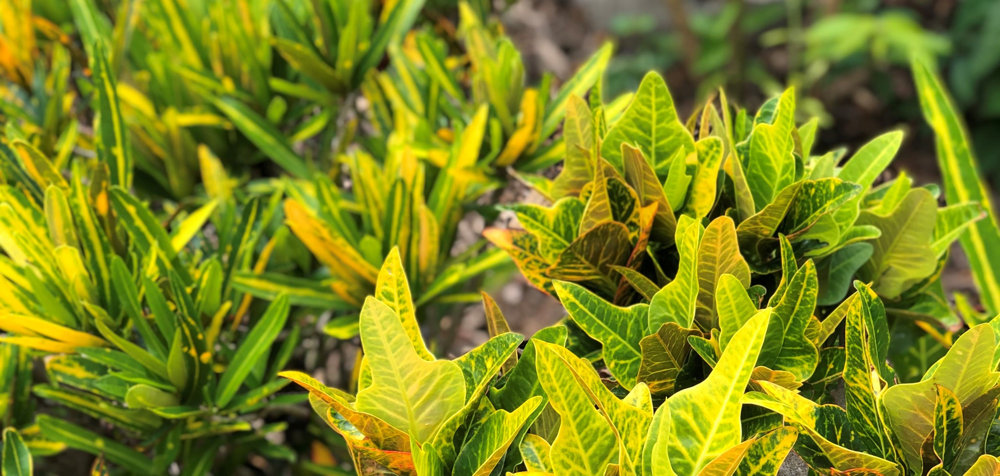
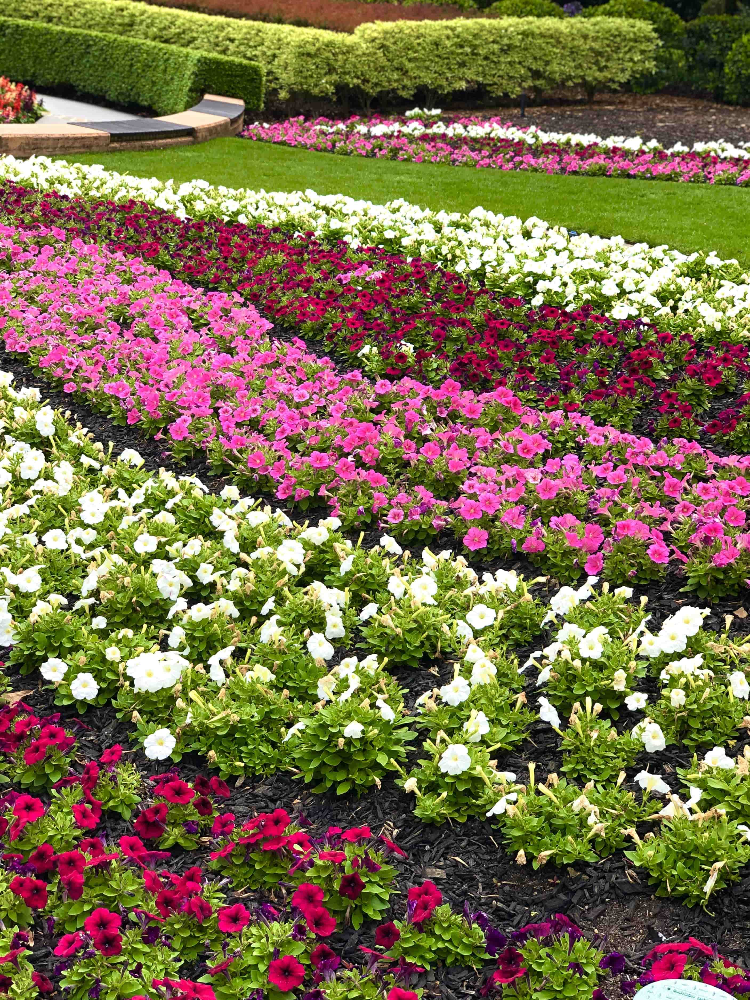
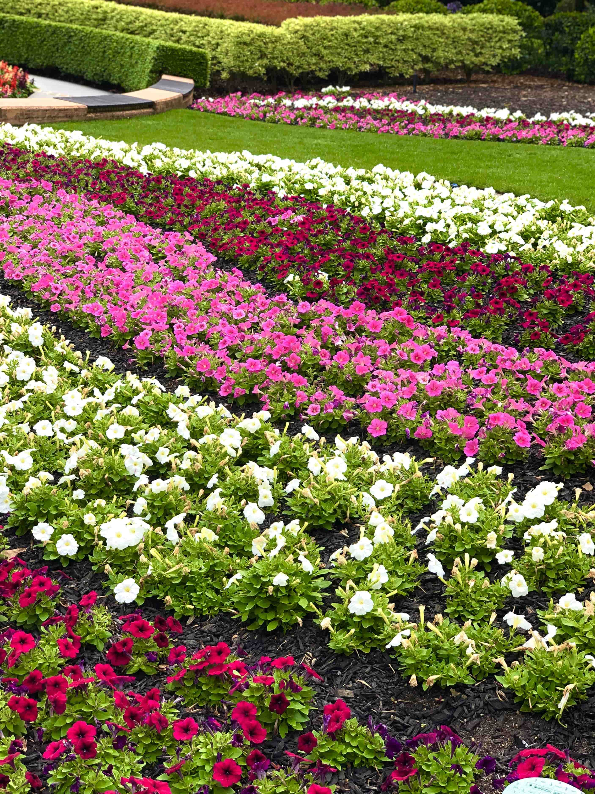

Flora
The spectacle garden is a beautifully florally decorated area that is perfect for exploring. It is located between the oval and playgrounds.
Youll never get bored with the variety of exotic, colourful flowers. New ones are being planted all the time!

The rows of flowers are truly endless. There are approximately 16000!
 

If you'd like to learn more about the garden, there is no shortage of tours that run throughout the year.